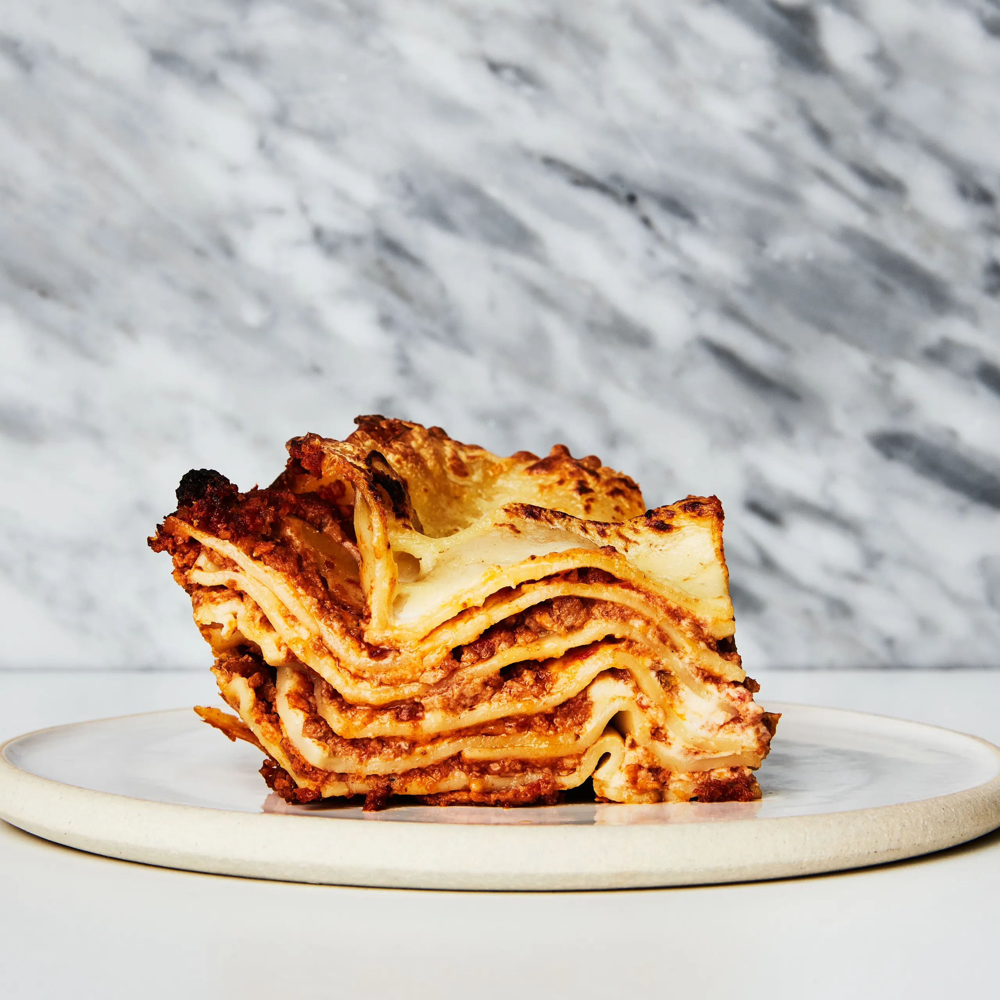

Lasagna Recipe

Perfection in the form of pasta!
This is probably the best recipe that I make.
I only make it for special occasions because it's a real labor of love!
It includes a homemade bolognese sauce, a mornay sauce, homemade
pasta, and a few more layers of awesome deliciousness. Read on for a recipe
that's sure to be a real showstopper.
Ingredients
For the pasta:
- 4 cups all-purpose flour
- 5 eggs
- A pinch of salt
For the bolognese:
- 1 1/2 lbs of ground beef
- 1 1/2 lbs of ground pork
- 8 strips of bacon or pancetta, cut into lardons
- 1 large onion, minced
- 2 carrots, peeled and finely chopped
- 3 ribs celery, finely chopped
- 1/4 cup tomato paste
- 1-2 cups Sauvignon Blanc
- 1 can crushed San Marzano tomatoes
- 1 cup heavy cream
- Parmesan cheese rind
- Olive oil
- Italian seasoning
- Salt
- Pepper
For the mornay sauce:
- 4 tbsps butter
- 4 tbsps all-purpose flour
- 8 oz grated parmesan cheese
- 1 full head of garlic, peeled and minced
- Salt
- Pepper
Extras:
- 1 package of prosciutto
- 1 package of fresh mazzarella cheese- the sliced kind
- 1 package of fresh basil
- 8 oz of not fresh mozzarella, shredded